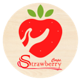
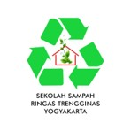

Showcasing Practices and Ideas of Circular Economy to Forge Knowledge Co-Production on International Trade and Sustainability Linkages in Developing Countries
Through its Chairs Programme, the World Trade Organization (WTO) is fostering research, training and outreach activities of relevance to governmental policy makers and other stakeholders at universities in developing countries and least developing countries (LDCs). In 2021, a special call was made to the Chairs of the first and second phases inviting them to submit research proposals for projects focused on the following themes:
1. COVID -19 and Global Value Chains: Keeping Global Markets Open
2. Promoting Economic Recovery through Trade in a post COVID-19 World
3.Towards a Sustainable and Greener Trade: Trade Environment, Fisheries and Aquaculture in the context of the Blue Economy, Trade and Climate Change
4. E-Commerce and the Digital Economy
5. Inclusive Trade: Micro, Small, Medium-Sized Enterprises (MSMEs), Women and Trade
With support from the WCP donors, 12 Chairs from universities in Argentina, Brazil, Barbados, Chile, China, Indonesia, Jordan, Kenya, Mauritius, Mexico, Morocco and Turkey received funding. Indonesia (under the Center for World Trade Studies, Universitas Gadjah Mada) has been a Chair with the WCP since its first phase was launched in 2010. For this special call, the Chair implemented a project focused on expanding and promoting knowledge co-production in developing countries on the linkages of the WTO, international trade policy and the circular economy (CE) from regional and subnational perspectives.
| No | Komunitas/Instansi | Rencana Display Layanan/Produk | Gambaran Produk/Layanan | |
|---|---|---|---|---|
| 1 |

|
Yayasan Sanggar Anak Alam (SALAM) |
Sampo, sabun mandi, sabun cuci piring, sabun cuci baju, pel lantai, sikat gigi bambu, cotton bud bambu, sikat kamar mandi sabut kelapa, dan bahan pangan lokal. | |
| 2 |

|
Pusat Studi Perdagangan Dunia Universitas Gadjah Mada (PSPD UGM) |
Brosur, kajian, portofolio hasil pelatihan IGPA, dan garam. | |
| 3 |
Pesantren Amumarta |
Publikasi tentang renewable energy (display koran), batik (sudah ada rangka display), dan produk serupa tanamu oil. | ||
| 4 |
Jaringan Masyarakat Budaya Nusantara |
Buku, kajian, circular fesyen | ||
| 5 |
Pusat Inovasi Agroteknologi Universitas Gadjah Mada (PIAT UGM) |
Buku saku masyarakat tangguh sampah, buku solusi pengelolaan sampah kota, produk hasil pengolahan sampah (kompos, produk maggot, produk olahan masker). | ||
| No | Komunitas/Instansi | Rencana Display Layanan/Produk | Gambaran Produk/Layanan | |
|---|---|---|---|---|
| 1 |
Rumijo Eco Indonesia |
Pasta gigi arang bambu, sabun mandi alami, sabun cuci tangan, piring dan pakaian, shampoo batang natural, lilin aroma terapi berbahan minyak jelantah, kaldu tempe, burger tempe, massage oil. | ||
| 2 |  |
Strawberry Corps |
Fermented Strawberry Juice, Strawberry Cookies, Strawberry Dried Fruit, Strawberry Powder, Strawberry Chips, Vermicompost | |
| 3 |
Sriti Production |
Figura, tempat tissue, box | ||
| 4 |
MIMPI |
Tas canvas bahan katun. | ||
| 5 |
BakulCraft |
Rajutan, eco stuff, tiedye pewarna alami | ||
| 6 |
Warung Ji'Ko Ubud |
Aneka vegan cookies | ||
| No | Komunitas/Instansi | Rencana Display Layanan/Produk | Gambaran Produk/Layanan | 1 |
Rapel Indonesia |
Leflet, video, alat peraga identitas Rapel |
|---|---|---|---|---|
| 2 |  |
Sekolah Sampah Ringas Trengginas |
Eco-enzyme, pupuk cair, kerajinan daur ulang tas kresek, sabun minyak jelantah, seni instalasi (plastik dan kaleng bekas), batik ramah lingkungan, karya lukis dari plastik, patung dari B3. | |
| 3 |
Komunitas Banyu Bening |
Instalasi alat konversi air hujan menjadi air siap konsumsi. dan produk turunan (pupuk). | ||
| 4 |

|
Rumah Kreativitas Jogja d"Shafira |
- | |